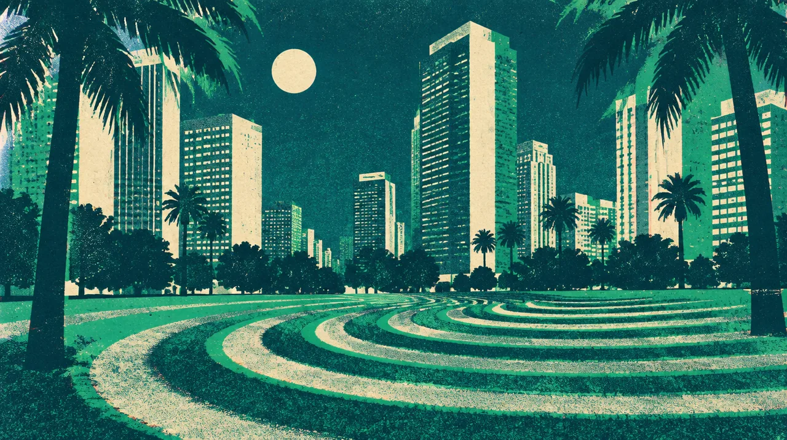

MUSIC · OCT 03 · Los Angeles
ZEDS DEAD
Sometimes the company is the music.
A familiar artist. A wonderfully strange new door.
10days out
- When
- Sat Oct 3, 2026
- Where
- Grand Park, Los Angeles · Directions
- Light
- After dark
In the mix
Just me, at my own pace.
This one is a night for me: bass, curiosity, and my own pace.
Dig into the sound and story
4 short chapters. Open the ones that call to you.
BEFORE THE BASSA hip-hop beginning.
Deadbeats tells the Zeds Dead story through Hooks and DC’s early hip-hop production and a change of direction in 2009. The ambition became a meeting place for house’s togetherness, drum and bass’s force, ambient space and electro’s weight.
FOLLOW THE LABELThe collaboration is part of the sound.
We Are Deadbeats Vol. 4 brings Zeds Dead together with artists across their label’s world. Deadbeats describes a range running through dubstep, drum and bass and house. Following a featured artist is a way to keep the discovery moving after the headliner.
THE VISUAL WORLDAn artist who thinks in channels.
“Channel Flipping 2: Only You” is an audiovisual doorway from the duo’s official links. The album Return to the Spectrum of Intergalactic Happiness extends their interest in a psychedelic journey through time and sound. Let the images be part of the listening.
MY NEXT CHAPTERMy rhythm. My night.
Grand Park is my intentional solo outing. The birthday Zeds Dead plan with Foster in New York was postponed; that rain check is still owed. This one gets its own pace and its own place in the story.
Before we go
Artist recordings open on their own players. Not a promised setlist.
Swipe the picture, or use the arrow keys, for the next night.